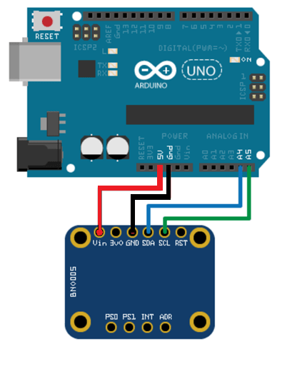

Read and Plot Real-Time Data from BNO055 Sensor in NDOF Mode
This example shows you how to read and plot calibrated data from a Bosch Sensortec BNO055 a 9-axis absolute orientation sensor in real time. To read the orientation values directly from the BNO055 sensor, configure the sensor in the NDOF operating mode.
BNO055 is a 9-axis sensor with an integrated accelerometer, gyroscope, and magnetometer. The accelerometer measures acceleration, the gyroscope measures angular velocity, and the magnetometer measures the magnetic field along x-, y-, and z-axis. The axis of the sensor depends on the make of the sensor.
Required Products
MATLAB®
MATLAB Support Package for Arduino® Hardware
Required Hardware
Arduino Uno
Bosch BNO055 Sensor
Hardware Connection

Connect the SDA, SCL, GND, and the VCC pins of the BNO055 sensor to the corresponding pins on the Arduino hardware. This example uses an Arduino Uno board with the following connections:
SDA — A4
SCL — A5
VCC — +5V
GND — GND
Ensure that the connections to the sensor is intact. We recommended that you use a prototype shield and solder the sensor to it to avoid loose connections when moving the sensor. For information on debugging sensor related issues, see Troubleshooting Sensors.
Create Connection to BNO055 Sensor in NDOF Mode
Create a connection to the BNO055 sensor in the NDOF mode. Ensure that you create
the arduino object with the library set
to
'I2C'.
arduinoObj = arduino('COM7', 'Uno', 'Libraries', 'I2C'); bno = bno055(arduinoObj, 'OperatingMode', 'ndof');
Calibrate BNO055 Sensor
Calibrate the sensor using the steps described in Calibrate BNO055 Sensors.
% Accelerometer calibration flag accCalib = 0; % Gyroscope calibration flag gyrCalib = 0; % Magnetometer calibration flag magCalib = 0; fprintf('Calibrating the BNO055 sensor . . . \n'); while(prod([accCalib, gyrCalib, magCalib]) ~= 1) if strcmpi(bno.readCalibrationStatus.Accelerometer, "full") && isequal(accCalib, 0) accCalib = 1; fprintf('Accelerometer is calibrated! . . .\n'); end if strcmpi(bno.readCalibrationStatus.Gyroscope, "full") && isequal(gyrCalib, 0) gyrCalib = 1; fprintf('Gyroscope is calibrated! . . .\n'); end if(strcmpi(bno.readCalibrationStatus.Magnetometer, "full"))&& isequal(magCalib, 0) magCalib = 1; fprintf('Magnetometer is calibrated! . . .\n'); end end fprintf('BNO055 sensor is fully calibrated!\n');
Read Sensor Data
Read the orientation, acceleration, angular velocity, and magnetic field strength from the BNO055 sensor.
Estimate the time between consecutive read cycles.
% Provide time frame in seconds senseFrame = 60; % Measure approximate execution time of a single read cycle tic; readOrientation(bno); readAcceleration(bno); readAngularVelocity(bno); readMagneticField(bno); tDelta = toc; % Number of samples to be collected in the senseFrame time frame numSamples = floor(senseFrame/tDelta); % Time vector tVector = linspace(0, senseFrame, numSamples); tCorrection = 0; recordedData = zeros(numSamples, 3, 4);
Set up the figure handles to plot the change in orientation, acceleration, and magnetic field strength as the device moves.
subplot(4, 1, 1) hold on % Create handle to Azimuth animatedline object hAzimuth = animatedline('color', 'r', 'linewidth', 1.25); % Create handle to Pitch animatedline object hPitch = animatedline('color', 'k', 'linewidth', 1.25); % Create handle to Roll animatedline object hRoll = animatedline('color', 'b', 'linewidth', 1.25); legend('Azimuth (rad)','Pitch (rad)','Roll (rad)'); ylabel('Euler Angles (rad)');xlabel('Time (s)'); title('Reading Orientation of the BNO055 sensor', 'fontsize', 12); axis([0 senseFrame -6.5 6.5]) grid minor hold off subplot(4, 1, 2) hold on % Create handle to X-axis acceleration animatedline object hAx = animatedline('color', 'r', 'linewidth', 1.25); % Create handle to Y-axis acceleration animatedline object hAy = animatedline('color', 'k', 'linewidth', 1.25); % Create handle to Z-axis acceleration animatedline object hAz = animatedline('color', 'b', 'linewidth', 1.25); legend('A_x (m/s^2)','A_y (m/s^2)','A_z (m/s^2)'); ylabel('Acceleration (m/s^2)');xlabel('Time (s)'); title('Reading Accelerometer values from BNO055 sensor', 'fontsize', 12); axis([0 senseFrame -30 30]); hold off grid minor subplot(4, 1, 3) % Create handle to X-axis angular velocity animatedline object hVx = animatedline('color', 'r', 'linewidth', 1.25); % Create handle to Y-axis angular velocity animatedline object hVy = animatedline('color', 'k', 'linewidth', 1.25); % Create handle to Z-axis angular velocity animatedline object hVz = animatedline('color', 'b', 'linewidth', 1.25); legend('\omega_x (rad/s)','\omega_y (rad/s)','\omega_z (rad/s)'); ylabel('Angular Velocity (rad/s)');xlabel('Time (s)'); title('Reading Angular velocity values from BNO055 sensor', 'fontsize', 12); axis([0 senseFrame -10 10]); hold off grid minor subplot(4, 1, 4) % Create handle to X-axis magnetic field animatedline object hMagx = animatedline('color', 'r', 'linewidth', 1.25); % Create handle to Y-axis magnetic field animatedline object hMagy = animatedline('color', 'k', 'linewidth', 1.25); % Create handle to Z-axis magnetic field animatedline object hMagz = animatedline('color', 'b', 'linewidth', 1.5); legend('\mu_x (\muT)','\mu_y (\muT)','\mu_z (\muT)'); ylabel('Magnetic Field (\muT)');xlabel('Time (s)'); title('Reading Magnetometer values from BNO055 sensor', 'fontsize', 12); axis([0 senseFrame -50 50]); hold off grid minor
Read and plot the calibrated data from the sensor.
for i = 1:numSamples % Read Orientation values (Euler angles) from the sensor [sensorVal, ~] = readOrientation(bno); % Read Acceleration values from the sensor [AccelVal, ~] = readAcceleration(bno); % Read Angular velocity values from the sensor [AngVelVal, ~] = readAngularVelocity(bno); % Read Magnetic field strength values from the sensor [MagVal, ~] = readMagneticField(bno); tic; addpoints(hAzimuth, tVector(i) + tCorrection,sensorVal(1)); addpoints(hPitch, tVector(i) + tCorrection,sensorVal(2)); addpoints(hRoll, tVector(i) + tCorrection,sensorVal(3)); addpoints(hAx, tVector(i) + tCorrection, AccelVal(1)); addpoints(hAy, tVector(i) + tCorrection, AccelVal(2)); addpoints(hAz, tVector(i) + tCorrection, AccelVal(3)); addpoints(hVx, tVector(i) + tCorrection, AngVelVal(1)); addpoints(hVy, tVector(i) + tCorrection, AngVelVal(2)); addpoints(hVz, tVector(i) + tCorrection, AngVelVal(3)); addpoints(hMagx, tVector(i) + tCorrection, MagVal(1)); addpoints(hMagy, tVector(i) + tCorrection, MagVal(2)); addpoints(hMagz, tVector(i) + tCorrection, MagVal(3)); recordedData(i, :, 1) = sensorVal; recordedData(i, :, 2) = AccelVal; recordedData(i, :, 3) = AngVelVal; recordedData(i, :, 4) = MagVal; tCorrection = toc; drawnow; end
Clean Up
When the connection is no longer needed, release and clear the objects.
release(bno); clear arduinoObj; clear bno;